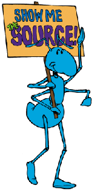

| |
|
About AbiWord About Open Source Index Contents What's New Check Version Introduction Installation Getting Started The Workspace Entering Text Formatting Edit Commands Paragraphs Styles Inserting Objects Printing Preferences Shortcuts abisource.com FAQ Credits Search |
Introduction to AbiWordWhy AbiWord?The Single Document InterfaceAbiSource, Inc.AbiWord is a small and simple word processor, that is fast and complete. It forms part of the AbiSource project which is sponsored by the SourceGear company. The goal of this project is the development of an Open Source and multi platform office suite . The beginning of this project starts with AbiWord, the word processor. Abiword's features include it's " look & feel " (see the screen capture), its ability to format pages and paragraphs, a spell checker, an interactive rule, the integration of styles, it's unlimited capacity to undo / redo , a Rechercher / Remplacer(???) function and the insertion of images. It is also able to import documents from Microsoft Word 97 and rtf (Rich Text Format) and to save documents using Internet HTML format.But the most significant difference of AbiWord compared to almost all the other word processors available is the format of it's native files. A document saved under AbiWord has an extension by default of * abw and is written in XML and thus in ASCII format. These files can then be read by any text editor. That does not mean that AbiWord is a XML editor. AbiWord is a word processor which uses the XML like a practical syntax for representation of documents. It is total new compared to the other traditional word processors and that ensures that when a document is written with AbiWord, it is tied to no particular word processor; word processors which will become obsolete in the five years to come. Lastly, AbiWord is completely free and multi platform: it functions under Windows and the majority of the Unix systems. The next few years will see personal data processing become very much a part of the development and the deployment of several operating systems (OS). AbiWord will be thus be able to run under these principal OS. (Not sure about the translation here either) Once again, the choice of native files XML will ensure portability of these files onto these various platforms whereas the traditional word processings platforms will remain restricted to only one or several platforms.
|
|||||||||||||||||||
| Company: | AbiSource |
| Version: | 0.7.10 |
| Date of publication: | 16/6/2000 |
| File Size: | 4431K |
| Licence: | Free (Open Source) |
| Platforms: | Windows / Unix / BEOS |
| Automatic Installation | Yes |
|  | The development part of the Open Source concept differs from traditional commercial software owing to the fact that the source code (lines of instructions which defines the software in itself) are freely available just as the software is itself. For the majority of the users, it is of little importance, however, everyone profits from the ceaseless improvements that each volunteer makes on the original software. Everyone can take part in the improvement of the product. This concept is opposed to that of the proprietry software developer, who is protected by a licence prohibiting the access to the source code, any additions or withdrawals to the source code, the copying of the software and it's redistribution. For more information on the Open concept Source, visit the site www.opensource.org |
| AbiWord is thus Open Source software
. It is not a shareware: you do not have any legal obligation, moral or
of all other kind. It is completely free. We simply want anyone to be able
to freely use this software: you can even copy it for other people who
are likely to be interested.
AbiWord is being born from a model of development that many people ignore. The result of the contributions of many people all over the world is that frequent updates appear. The users of AbiWord should always check to see if a new version has come out, and should also consult the AbiSource site frequently to be sure that they are using the most recent version of AbiWord. |
|